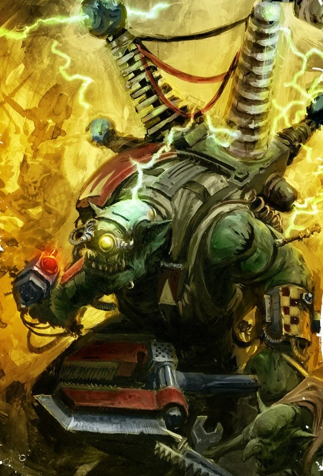
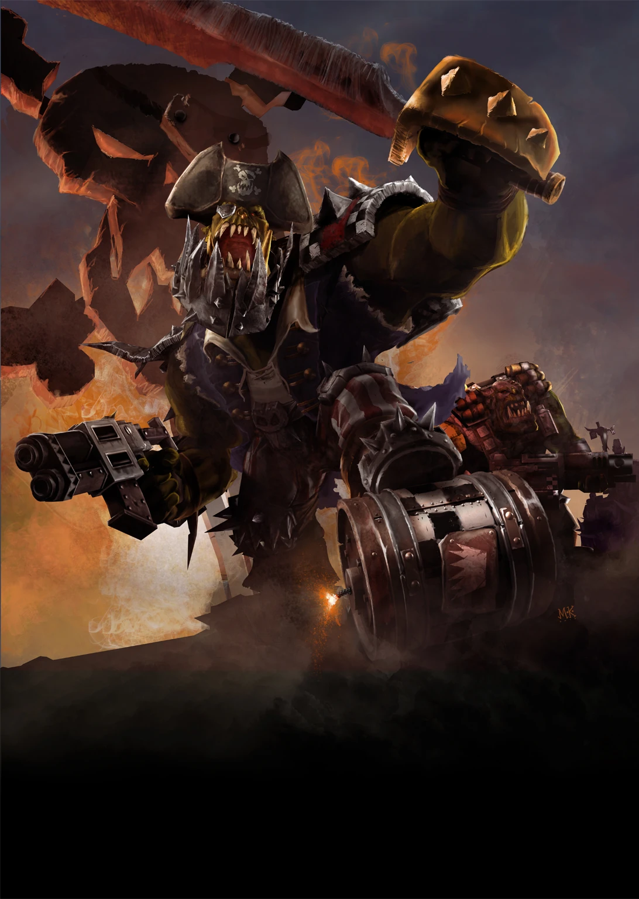

About Da Orks
Orks are da brutest, greenest, and most boisterous xenos in da 41st Millennium. They live for scrap, fight for fun, and build crazy war machines bigger than your house.
Notable Ork Characters

Warboss
The biggest boss who leads Da WAAAGH! with brutal strength and cunning.

Mekboy
Da genius ork who builds da kustom war machines, guns, and klan gear.

Freebooter
A renegade Ork pirate (Freebooter) wot sails da void, lootin’ ships and krumpin’ anyfing that gets in da way.
Whether it’s a Warboss ordering a charge, a Mekboy building a mega-gun, or Boyz screaming “WAAAGH!”, Orks bring a wild, chaotic energy any time they show up. And they love building stuff — trukks, gargants, weird mechanical war machines.